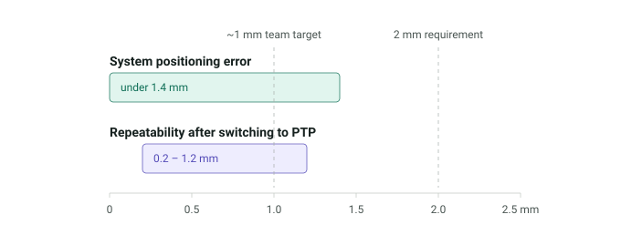
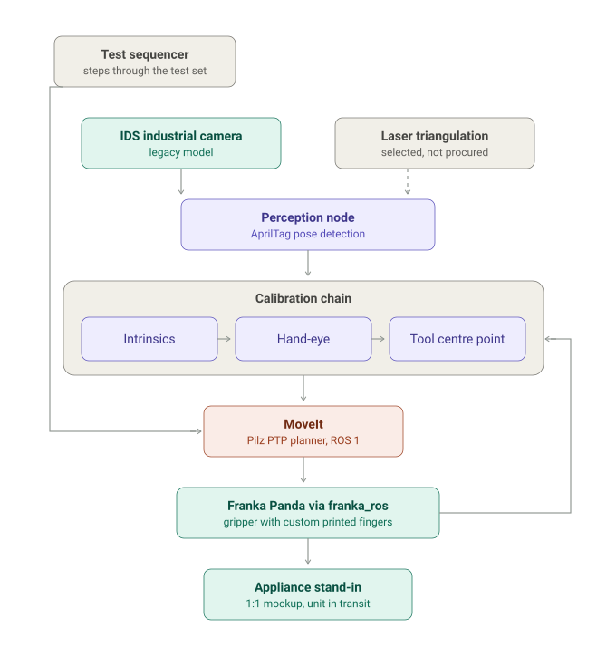
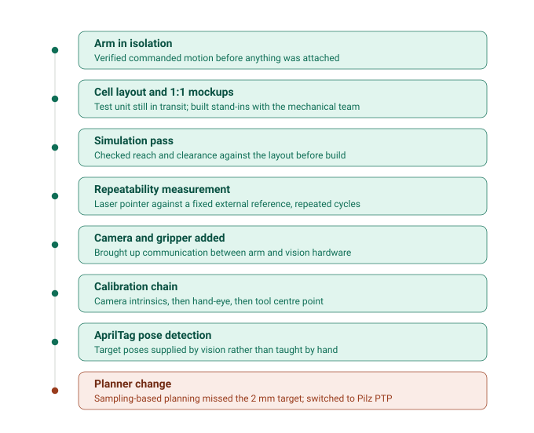
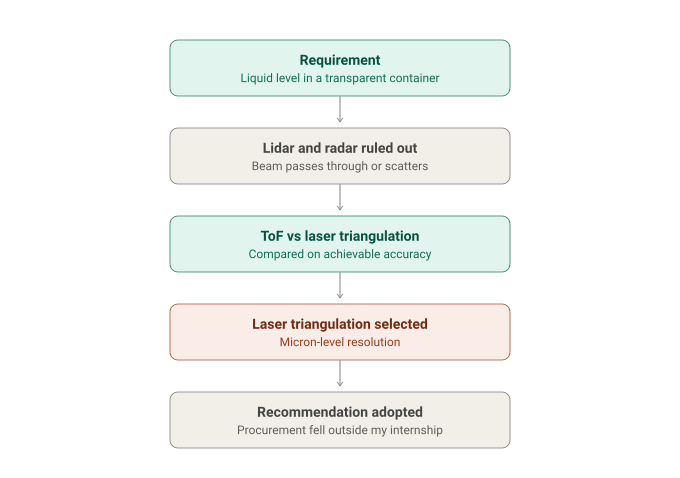

A robotic test cell for validating a household appliance. I took it from an empty floor plan to a system that ran test sequences on its own: a seven-axis arm, an industrial camera, a gripper with custom fingers, and the perception, calibration and motion stack that tied them together.
Under NDA. The product under test, internal test data and company drawings are left out. Every drawing on this page was made by me from scratch, at a level of abstraction that gives away nothing proprietary.
Result

The cell had to hold 2 mm, and the team wanted around 1 mm if we could get it. Measured positioning error came in under 1.4 mm. Repeatability, once the planner changed, sat between 0.2 and 1.2 mm.
System

| Subsystem | Hardware | Role in the cell |
|---|---|---|
| Arm | Franka Emika Panda, 7 axes | Motion execution through franka_ros / libfranka |
| End effector | Franka gripper, custom fingers | Fingers printed in-house by the mechanical team on a Formlabs printer |
| Vision | IDS industrial camera, legacy model | AprilTag pose detection |
| Liquid level | Laser triangulation sensor | Selected for micron-level resolution; not procured before I left |
| Planning | MoveIt, Pilz industrial motion planner | PTP moves in a fixed, fully known cell |
Bring-up
The unit we were meant to test was still in transit from Europe, so the cell was built around 1:1 stand-ins designed with the mechanical team. Each layer of hardware went on only after the error it introduced could be measured on its own.

Measuring repeatability
With no instrumentation budget, repeatability was measured by fixing a laser pointer to the flange, commanding the arm back to the same pose over repeated cycles, and reading the scatter of the spot against a fixed external reference.

Sampling-based planning is built for environments that change. Ours did not. The layout was fixed and every target pose was known, so the path variability that makes the planner useful elsewhere was only costing us accuracy. Switching to the Pilz planner's PTP mode brought the cell inside the requirement.
A failure that lived at an interface
A hand-eye calibration offset was consistently biased in one direction. Re-running the calibration and adjusting poses and parameters made no difference. After reading that stream timing can corrupt the pose pairing, I logged the camera and joint-state timestamps and confirmed they were not aligned; correcting the capture timing removed the bias. Both subsystems looked healthy in isolation. The failure only existed between them.
Sensor selection: liquid level

Vendor and platform evaluation
Viam
Evaluated Viam as a potential partner platform, running it alongside the ROS setup rather than switching over, since an early-stage platform carried integration risk. Bringing our hardware up on it was the work: the vendor had no profiles for our equipment, much of which was old enough to have lost manufacturer support, so I sourced models, configuration files and interface specifications from the original manufacturers until every device was connected. Software issues did surface during the evaluation. The visualisation was still clearer than our ROS tooling for teammates without a robotics background, and that assessment fed back into the partnership discussion.
End-effector fingers
Joined supplier meetings with gripper and tactile-sensor vendors in Korea, Japan, the United States and Australia, assessing mechanical and software compatibility with our arm, fit to our use case, and realistic lead times. The fingers we settled on were custom-made, printed in-house by the mechanical team on a Formlabs printer.
Handover
Before leaving I wrote a set of handover documents split by subsystem, covering build, operation and troubleshooting, so that whoever picked the cell up next could run the code and change it without me.